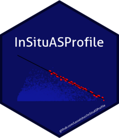

InSituASProfile
InSituASProfile.RmdExample
This is a basic example of how to use the InSituASProfile Package:
Import data (csv files) from folder and combine in single data frame for analysis.
library(here)
#> here() starts at C:/Users/lasse/OneDrive/Documents/R/Packages/ASProfile
InSituASProfile::import_data(here("./data/"), "speed", "acc")
#> [1mRows: [22m[34m58871[39m [1mColumns: [22m[34m10[39m
#> [36m──[39m [1mColumn specification[22m [36m────────────────────────────────────────────────────────[39m
#> [1mDelimiter:[22m ","
#> [32mdbl[39m (10): speed, acc, Odometer, Latitude, Longitude, Heart Rate, Player Load...
#>
#> [36mℹ[39m Use `spec()` to retrieve the full column specification for this data.
#> [36mℹ[39m Specify the column types or set `show_col_types = FALSE` to quiet this message.Prepare data
This step cleans the data frame by 1) omitting all acceleration values below 0, 2) identify the two highest acceleration values for every consecutive 0.2 m/s cut starting from 3 m/s, and 3) create an initial regression line and associated preliminary plot (if not FALSE)
InSituASProfile::prepare_data(data_import, print_plot = TRUE)
#> [1m[22m`geom_smooth()` using formula = 'y ~ x'
Calculate the AS Profile
Calculate the A-S Profile. This step uses the data exported from prepare_data, and to calculate the A-S Profile. It plots the A-S Profile as default (TRUE), while a plot showing the regression line is not printed by default (FALSE).